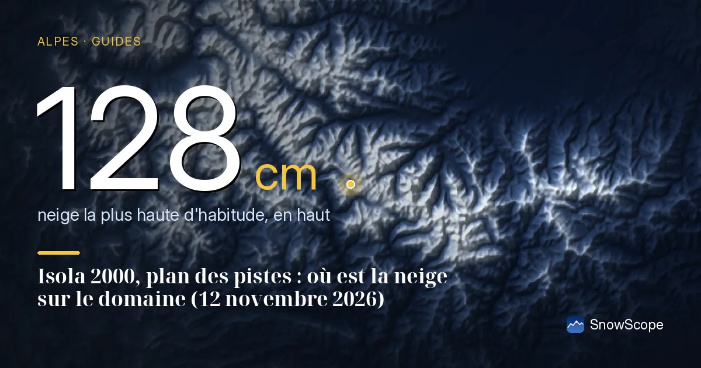

Isola 2000, plan des pistes : où est la neige sur le domaine (12 novembre 2026)
Isola 2000 revêt sa première fine couche hivernale le 11 novembre. La neige atteint 9 cm sur les hauts pics à 2 601 m, 7 cm sur les pentes moyennes autour de 2 214 m, et seulement 2 cm en bas de village. La semaine agitée qui arrive devrait ajouter environ 26 cm au sommet, mais pour l'instant c'est de la neige de novembre : peu épaisse, sensible au soleil, et façonnée par l'exposition de la montagne.
Consultez les prévisions neige en temps réel pour Isola 2000 sur l'application SnowScopeHauteurs de neige, alertes poudreuse et carte 3D, gratuitement.

Trois secteurs, une carte des neiges
Isola 2000 s'étend sur trois parties distinctes du massif du Mercantour. Pelevos au-dessus de la station convient aux débutants. Saint-Sauveur à l'est offre du terrain boisé et bosselé, apprécié des skieurs confirmés qui recherchent l'abri lors d'un redoux. Lombarde fait face au sud et monte vers la frontière italienne ; elle capte le soleil en premier et se ramollit vite au printemps.
Le terrain cartographié s'étend sur 55 km de pistes et 20 remontées entre le village à 1 828 m et le pic à 2 601 m. Ces chiffres proviennent des archives des domaines skiables, non de la communication marketing de la station. Quand vous ouvrez la carte des neiges en direct, les zones colorées indiquent où l'épaisseur est la plus importante — le sommet reste plus pâle plus longtemps que les pentes méridionales ensoleillées.

Ce qui est tombé et ce qui arrive
La semaine passée a apporté de la neige à tous les niveaux : 19 cm en bas de station, 27 cm à mi-montagne et 31 cm au sommet. Les deux derniers jours ont été secs. Les estimations prévoient que les sept prochains jours apporteront 2 cm en bas, 18 cm à mi-pente et 26 cm en altitude, avec 3 cm commençant dans les 24 heures.
Ce sont des prévisions régionales pour le secteur, non des mesures de station prises à la station elle-même. Le soleil et le vent de novembre réduisent tous deux le manteau, particulièrement sur les crêtes exposées et les pistes orientées au sud. Les chiffres supposent que l'air reste suffisamment froid pour que la neige persiste ; un redoux l'aminciraient plus vite.
Novembre au calendrier
Isola 2000 voit généralement ses premières neiges le 30 octobre au sommet, le 8 novembre à mi-montagne et le 13 novembre en bas de station. La saison est en bonne voie. Les 46 derniers hivers montrent que les premières neiges arrivent généralement à quelques jours de ces dates.
Un décembre type accumule 14 cm en bas de station, 23 cm à mi-montagne et 43 cm au sommet. Février est le mois abondant : 35 cm, 53 cm et 95 cm respectivement. Le pic médian d'un hiver moyen atteint 46 cm, 68 cm et 128 cm selon les trois zones. L'hiver dernier (2025-26) s'est avéré généreux, culminant à 51 cm, 76 cm et 140 cm.
Quelles pistes conservent la neige le plus longtemps
L'exposition ensoleillée de Lombarde signifie que sa limite des neiges recule vite lors d'un redoux et reste la plus basse au printemps. Saint-Sauveur, nichée en forêt, garde des plaques blanches plus longtemps et offre une progression plus sûre quand les pentes basses deviennent molles. La zone de sommet au-dessus des deux secteurs conserve l'épaisseur la plus importante et la plus durable.
La meilleure semaine statistique pour trouver 50 cm minimum ou plus au sommet est la semaine 11, mi-mars, quand 83 hivers sur 100 l'ont livré. À ce moment, l'épaisseur médiane atteint 97 cm. Planifiez un séjour printanier et consultez la carte une semaine à l'avance : la neige à Isola 2000 tend à arriver par impulsions plutôt que par une montée régulière.
Utiliser la carte pour planifier votre visite
Ouvrez la carte des neiges en direct d'Isola 2000 sur SnowScope et zoomez sur les trois bandes d'altitude. Le niveau de base accuse souvent un retard d'une ou deux semaines par rapport au sommet, donc ne jugez pas la station entière sur le chiffre le plus bas ; regardez d'abord les nombres à mi-montagne et au sommet pour voir la vraie force de la saison.
Rappelez-vous qu'une épaisseur de neige sur la carte ne vous dit pas quels remontées tournent. La station prend ces décisions indépendamment. Et après une chute de neige fraîche, avant de vous aventurer hors des pistes balisées, consultez le dernier bulletin d'avalanche de Météo-France.
Conseils aux skieurs
- Commencez par lire les épaisseurs à mi-montagne et au sommet, pas celle de la base. La neige de début de saison arrive d'abord au sommet ; le village a besoin de temps pour construire une base skiable.
- Le secteur Lombarde capte le soleil ; Saint-Sauveur conserve son manteau dans les arbres. Choisissez votre piste selon la chaleur ressentie durant la journée.
- Les rochers et les plaques minces sont courants en novembre.
- La prévision ajoute environ 26 cm en altitude au cours de la semaine prochaine, mais les redoux de novembre peuvent être rapides. Visez les matinées froides et les pentes exposées à l'ombre.
- Consultez le bulletin d'avalanche de Météo-France avant de quitter les pistes balisées, particulièrement après une chute de neige fraîche sur un terrain abrupt.
À propos de ces chiffres
Les hauteurs de neige des stations sont la neige la plus épaisse sur le haut du domaine à la date indiquée ; ce sont des estimations pour une zone, pas une mesure en un point. Les prévisions peuvent changer. Consultez toujours le bulletin d'avalanche officiel avant le hors-piste.
Bulletins d'avalanche officiels: Météo-France – Bulletin d'estimation du risque d'avalanche
Citer ce bulletin
Pour la recherche, l'enseignement ou la presse : chiffres et graphiques réutilisables librement sous CC BY 4.0 avec cette citation.
SnowScope (2026), Isola 2000, plan des pistes : où est la neige sur le domaine (12 novembre 2026), https://snowscope.app/blog/fr/2026/11/isola-2000-ski-map-snow-12-november-2026.html, consulté le 2026-11-12
SnowScope (Atlas Labs). (2026, November 12). Isola 2000, plan des pistes : où est la neige sur le domaine (12 novembre 2026). SnowScope snow reports. https://snowscope.app/blog/fr/2026/11/isola-2000-ski-map-snow-12-november-2026.html
BibTeX
@misc{snowscope2026isola2000skimapsnow12nov,
author = {{SnowScope (Atlas Labs)}},
title = {Isola 2000, plan des pistes : où est la neige sur le domaine (12 novembre 2026)},
year = {2026},
month = nov,
howpublished = {\url{https://snowscope.app/blog/fr/2026/11/isola-2000-ski-map-snow-12-november-2026.html}},
note = {Published 2026-11-12 07:43 UTC; accessed 2026-11-12}
}· CC BY 4.0 · Méthodes, données et outils →
Isola 2000 : neige et température selon l'altitude, cet hiver vs l'hiver dernier (outils) →
Suivre Isola 2000
Gratuit : un message quand la neige arrive, et la météo chaque matin.